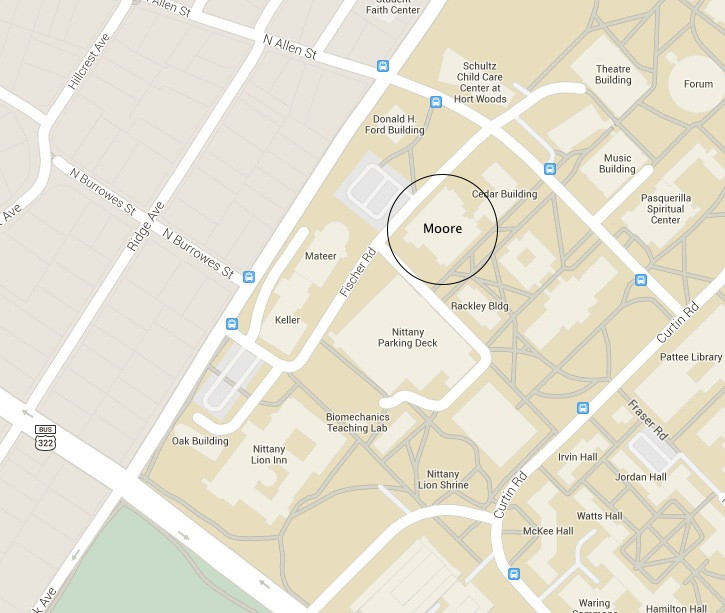

Rick Gilmore's Lab @ Penn State
Mission
The Gilmore Lab in the Psychology Department at Penn State studies the development of perception, action, and memory. Our goal is to understand patterns of brain and behavioral change in infants, children, and young adults. We use behavioral, EEG, and MRI methods in our research.
Active Projects
We have several active projects related to visual perception and open science that are described here. You can also get a taste of what we do by visiting the Databrary digital data library, specifically the page devoted to our research.
Contact Information
Dr. Rick Gilmore, (rogilmore@psu.edu; 814-865-3664; 114 Moore Building) directs the lab.
Andrea Seisler is the Lab Manager.
Testing Sites
We have two testing sites.
449 Moore
Department of Psychology The Pennsylvania State University University Park, PA 16802 814-863-3116

Parking for studies at the Moore Building can be found in the Nittany Lion Parking Deck.
120 Chandlee
Human Electrophysiology Facility Social, Life, & Engineering Sciences Imaging Center (SLEIC) University Park, PA 16802
Parking for studies at Chandlee can be found near the building. Our research staff will provide full instructions when we schedule a visit.
For Students
The lab employs an active and engaged group of undergraduate and graduate research assistants. If you are a Penn State undergraduate student and wish to be considered for a position in the lab, complete an online application here. If you are a prospective graduate student, contact Dr. Gilmore by email. For more information about current students and alumni, see the student page.
For Parents
Much of our research involves testing infants and young children. To sign-up for a study or learn more about what a visit entails please follow this link.